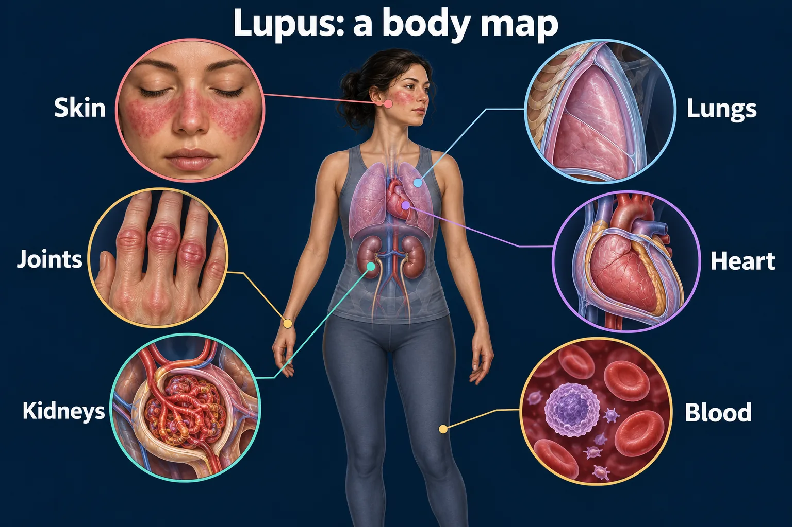

ABSN STUDY HUB · VISUAL STUDY CARD
Lupus: one disease, many body systems

Course labels and notes from the original graphic, arranged into readable sections. The illustration is schematic.
Course overview
NUR 258 / MODULE 3 / VISUAL STUDY GUIDE
- Lupus: one disease, many body systems
- Connect the familiar skin and joint findings to organ monitoring.
Familiar findings
- SKIN: Photosensitive rash; Hair loss; mouth sores
- JOINTS / ENERGY: Joint pain, swelling, fatigue. Balance activity with rest.
Organs to monitor
- BRAIN / NERVES: New confusion or seizure: urgent assessment
- HEART / LUNGS: Chest pain or breathlessness: assess promptly
- KIDNEYS: Track BP, urine and renal labs. Edema or urine changes: report.
- BLOOD / IMMUNITY: Follow CBC and infection signs. Fever needs evaluation.
EVERYDAY PROTECTION
- Sun protection • follow-up labs • prescribed medicines • report new organ symptoms
Sources
- Sources: NIH / NIAMS lupus overview and diagnosis, treatment and steps to take.
- Study aid • Reviewed September 23, 2026 • Source links and text version accompany this graphic.